School of Digital Media and Design Arts, Beijing University of Posts and Telecommunications
{gaoxiang1102, xibei156}@bupt.edu.cn
With large-scale text-to-image (T2I) diffusion models achieving significant advancements in opendomain image creation, increasing attention has been focused on their natural extension to the realm of text-driven image-to-image (I2I) translation, where a source image acts as visual guidance to the generated image in addition to the textual guidance provided by the text prompt. We propose FBSDiff, a novel framework adapting off-the-shelf T2I diffusion model into the I2I paradigm from a fresh frequency-domain perspective. Through dynamic frequency band substitution of diffusion features, FBSDiff realizes versatile and highly controllable text-driven I2I in a plug-and-play manner (without need for model training, fine-tuning, or online optimization), allowing appearance-guided, layout-guided, and contour-guided I2I translation by progressively substituting low-frequency band, mid-frequency band, and high-frequency band of latent diffusion features, respectively. In addition, FBSDiff flexibly enables continuous control over I2I correlation intensity simply by tuning the bandwidth of the substituted frequency band. To further promote image translation efficiency, flexibility, and functionality, we propose FBSDiff++ which improves upon FBSDiff mainly in three aspects: (1) accelerate inference speed by a large margin (8.9× speedup in inference) with refined model architecture; (2) improve the Frequency Band Substitution module to allow for input source images of arbitrary resolution and aspect ratio; (3) extend model functionality to enable localized image manipulation and style-specific content creation with only subtle adjustments to the core method. Extensive qualitative and quantitative experiments verify superiority of FBSDiff++ in I2I translation visual quality, efficiency, versatility, and controllability compared to related advanced approaches.
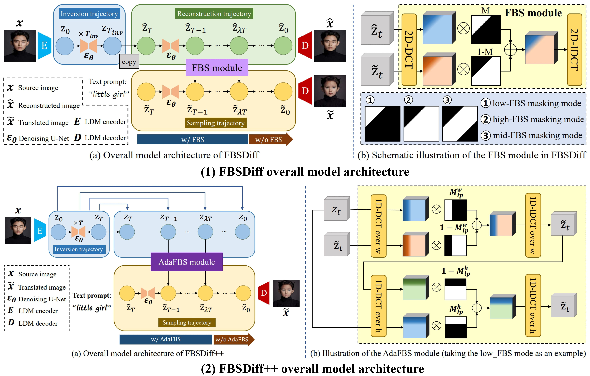
Our previous work proposes FBSDiff, a plug-and-play method adapting pretrained T2I diffusion model to the realm of text-driven I2I translation from the perspective of dynamic frequency band substitution. FBSDiff comprises an inversion trajectory, a reconstruction trajectory, and a sampling trajectory. An FBSDiff module is designed and inserted in between the reconstruction trajectory and sampling trajectory, transplanting feature frequency band to guarantee I2I consistency. FBSDiff enables versatile I2I applications and continuous intensity control of I2I consistency by tuning the type and bandwidth of the transplanted frequency band, respectively. In contrary, FBSDiff++ improves upon FBSDiff in four aspects: (1) FBSDiff++ dispenses with the reconstruction trajectory by extracting guidance features from the inversion trajectory, and thus accelerates inference speed noticeably; (2) FBSDiff++ swaps the 2D-DCT-based FBS module for the AdaFBS module, which achieves the same goal of dynamic frequency band substitution via two successive 1D-DCT filtering steps along the feature height and width axes, allowing for input images of arbitrary aspect ratio rather than only the square images; (3) FBSDiff++ converts the absolute DCT filtering thresholds to the percentile-based relative ones, enabling the model to be adaptive to input images of arbitrary resolution; (4) FBSDiff++ extends model functionality to enable localized image manipulation and style-specific content creation for input images of arbitrary size.
FBSDiff++ expands upon FBSDiff in four aspects:
(1) FBSDiff++ dispenses with the reconstruction trajectory by extracting guidance features from the inversion trajectory. Such streamlined model architecture bypasses the need for sufficiently long inversion trajectory to guarantee source image reconstruction accuracy, accelerating inference speed significantly;
(2) FBSDiff++ replaces 2D-DCT based FBS module with AdaFBS module, which realizes dynamic frequency band substitution via two successive 1D-DCT filtering steps along the two feature spatial dimensions, allowing for input images of arbitrary aspect ratio rather than only the square images;
(3) FBSDiff++ converts the absolute DCT filtering thresholds to the percentile-based relative ones, enabling the model to be adaptive to input images of arbitrary resolution;
(4) FBSDiff++ extends model functionality to enable localized image manipulation and style-specific content creation for input images of arbitrary size.
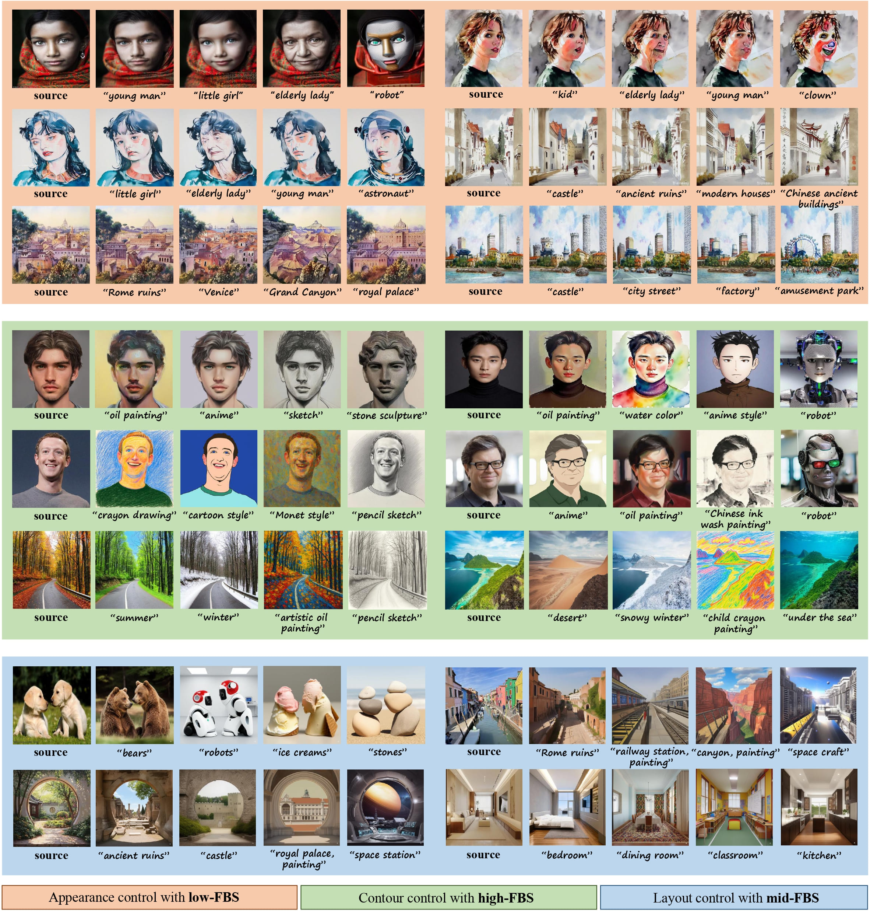
Example qualitative results of FBSDiff++ with different types of frequency band substitution. For low-frequency band substitution (low-FBS), the generated image is correlated with the source image in terms of image appearance (including style and structure), enabling I2I application of derivative image generation; for high-frequency band substitution (high-FBS), the generated image is consistent with the source image in image contour, enabling I2I application of text-driven image style translation; as for mid-frequency band substitution (mid-FBS), the generated image is similar to the source image only in image layout, enabling I2I application of layout-guided image translation.
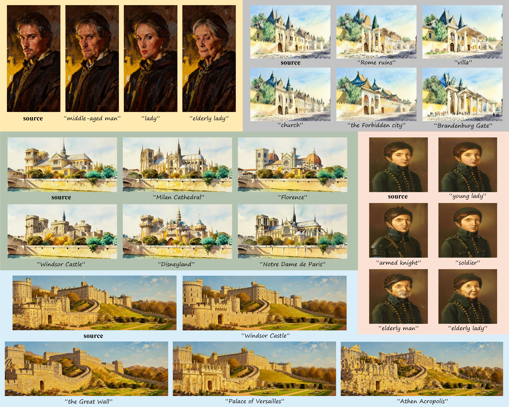
Taking the derivative image generation application in the mode of low-FBS for example, FBSDiff++ enables highquality I2I for input source images of arbitrary resolution and aspect ratio. Results maintain source image’s appearance accurately while comply with the text faithfully. The image resolution in the yellow pannel, gray pannel, green pannel, pink pannel, blue pannel is 1024×512, 512×768, 512×1024, 768×768, 512×1536, respectively.
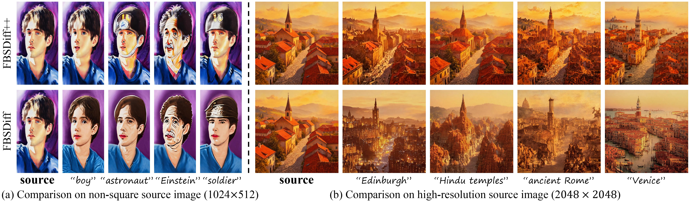
Visual comparison between FBSDiff and FBSDiff++. FBSDiff generates unnatural I2I results for non-square source image due to non-uniform (unequal-proportion) DCT filtering over the two spatial dimensions, and generates visually less correlated I2I results for large-size source image since the DCT filtering of the FBS module is not adaptive to image size. These two issues have been well solved by FBSDiff++ with the improved AdaFBS module.
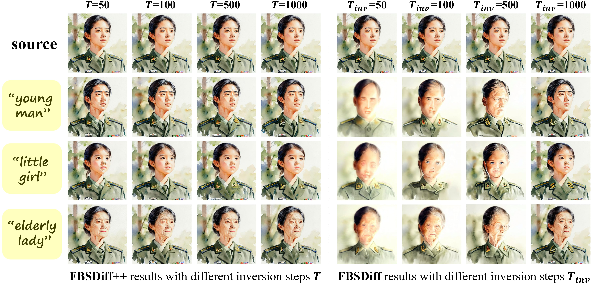
Visual comparison between FBSDiff and FBSDiff++ in different inversion steps. The generation quality of FBSDiff is highly dependent on the reconstruction accuracy of DDIM inversion, which leads to unsatisfactory I2I results with fewer inversion steps. FBSDiff++ bypasses source image reconstruction and enables to produce high-quality results with only 50 inversion steps, improving inference speed dramatically.
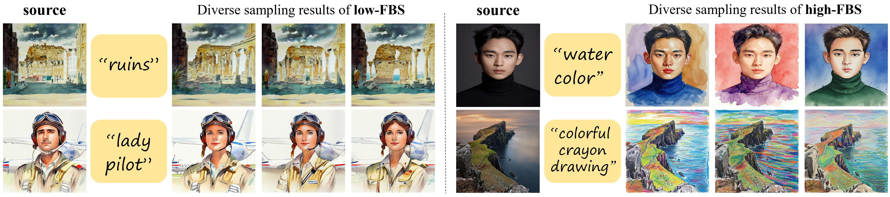
Our method features sampling diversity. FBSDiff++ generates random and diverse I2I results at each inference time.
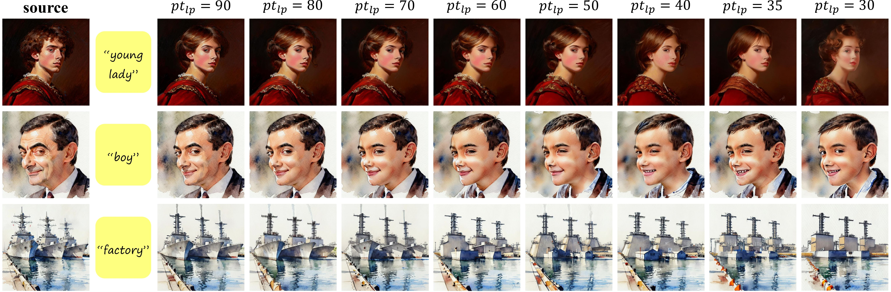
I2I appearance correlation control of FBSDiff++ achieved by tuning the low-FBS percentile threshold. The I2I appearance consistency increases with the growing of the threshold. Smaller threshold leads to more variation of the translated image compared with the source image.
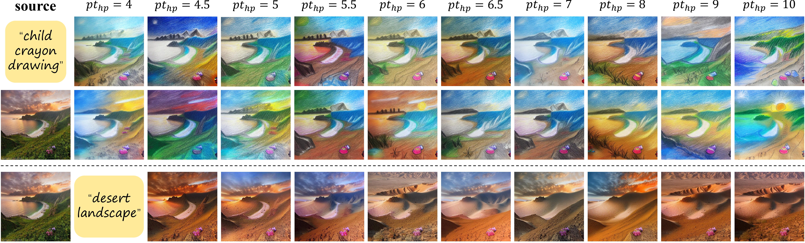
I2I contour correlation control of FBSDiff++ achieved by tuning the high-FBS percentile threshold. The I2I contour consistency increases as the threshold declines. Larger threshold leads to more contour deviation of the translated image compared with the source image.
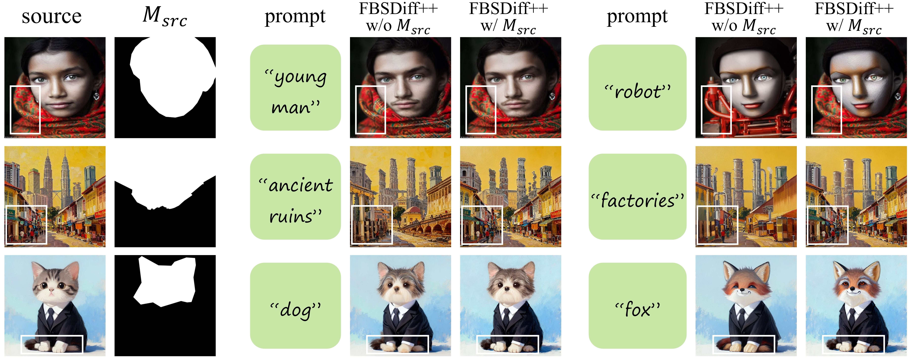
Demonstration of the extended functionality of FBSDiff++ for localized image manipulation. FBSDiff++ enables to locally manipulate the source image only in a specific region with a text prompt, where the manipulated area is indicated by a binary image mask. Content of the translated image outside the selected area is strictly maintained as the same as the source image
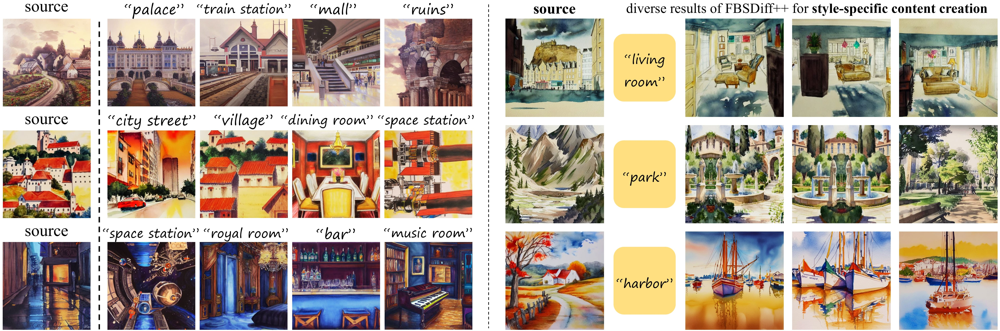
(left) Demonstration of the extended functionality of FBSDiff++ for style-specific content creation. The translated image inherits only style distribution of the source image without structural correlation. (right) FBSDiff++ samples diverse I2I results for the extended functionality of style-specific content creation. For a given text prompt, all results correlate with the source image only in terms of style, while the image structure remains disentangled and randomly varied.
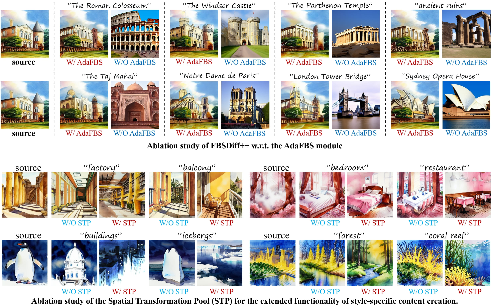
(top) Ablation study of FBSDiff++ w.r.t. the AdaFBS module. Taking the low-FBS mode for example, results w/ AdaFBS exhibit I2I appearance consistency, while results w/o AdaFBS have no visual correlation with the source image. (bottom) Ablation study of the Spatial Transformation Pool (STP) for the extended functionality of style-specific content creation. Results w/o STP correlate with the source image both in image style and image structure, while results w/ STP disentangle image structure and inherit only style distribution of the source image.
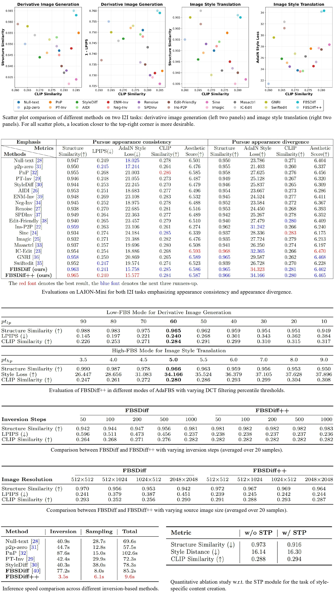